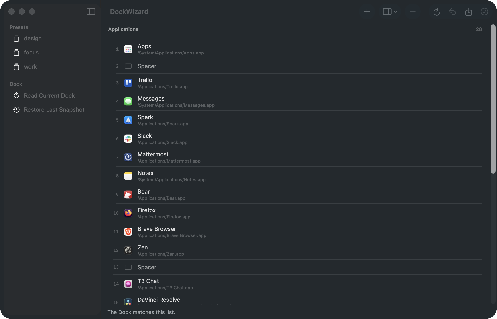
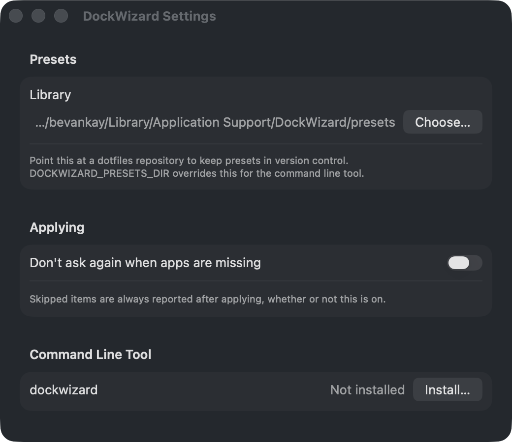

Missing apps are reported, never guessed
Open a colleague's preset on a Mac without Photoshop and DockWizard says so before it writes anything. The rest still applies.
Adobe Photoshop 2026not installed
Lineardifferent app at that path
Capture the Dock as portable JSON, edit it in bulk, and put it back on any Mac.

Apps are matched by bundle identifier against a verified path, so a stale copy on a mounted disk image can never win. Your home directory is written as ~, so a preset from one Mac still finds ~/Downloads under a different username.
Settings are optional and partial. A tiles-only preset leaves your Dock's size and position exactly as they were.
{
"schemaVersion": 1,
"name": "Work",
"apps": [
{ "type": "app",
"bundleId": "com.tinyspeck.slackmacgap",
"path": "/Applications/Slack.app" },
{ "type": "spacer" }
],
"others": [
{ "type": "folder",
"path": "~/Downloads",
"folder": { "showAs": "fan" } }
]
}Open a colleague's preset on a Mac without Photoshop and DockWizard says so before it writes anything. The rest still applies.
The whole Dock preference domain is snapshotted first, including keys DockWizard doesn't model.
dockwizard restore
Select a run of apps and act on all of them at once. Nothing touches the Dock until you press Apply, so a restart costs you one flicker, not twenty.

The app bundles a dockwizard binary with exit codes worth branching on. 0 applied cleanly, 2 applied with items skipped, 1 failed.
# capture the current Dock into the preset library
$ dockwizard export --save work
# see what applying it would change, without writing
$ dockwizard apply work --dry-run
apps:
- Adobe Photoshop 2026
+ Linear
~ order changes
settings:
~ tilesize: 48 -> 64
# positions are 1-indexed and count spacers
$ dockwizard add com.apple.Safari --position 3
$ dockwizard move 5 2brew install --cask bevanjkay/tap/dockwizardOr download the DMG and drag DockWizard to Applications. The command line tool installs from Settings.
A sandboxed app is not allowed to write another application's preferences, which is the entire job. Releases are signed with a Developer ID and notarised by Apple instead.